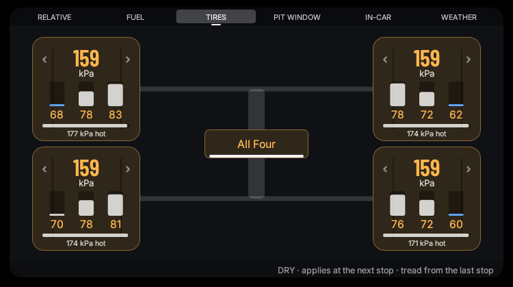
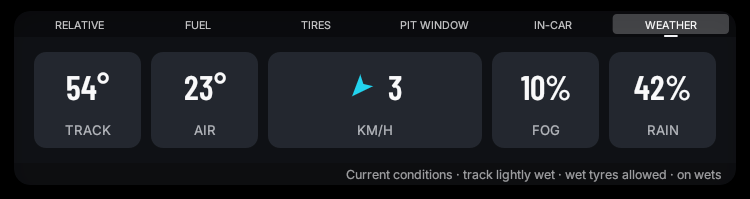
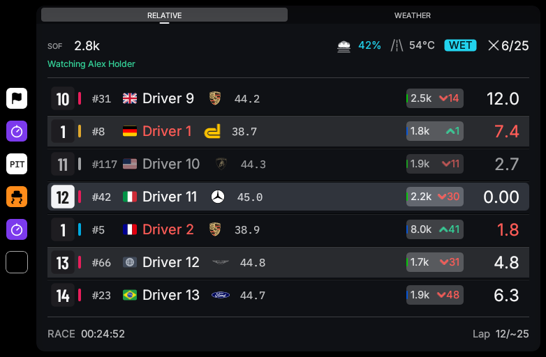
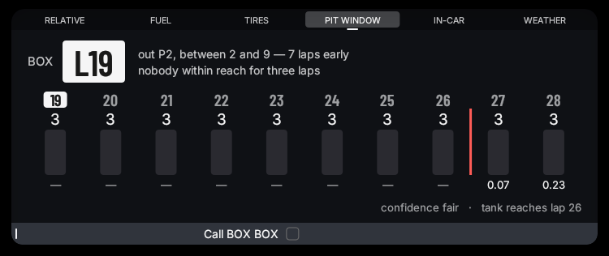
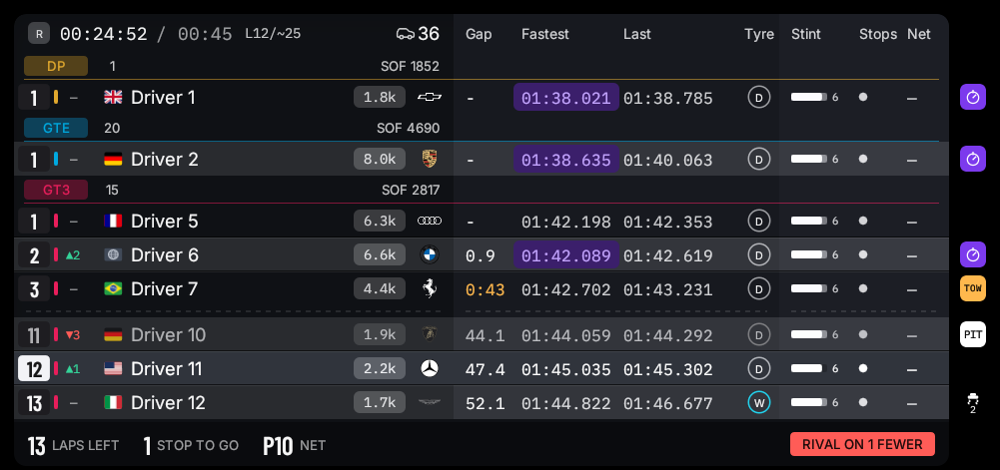
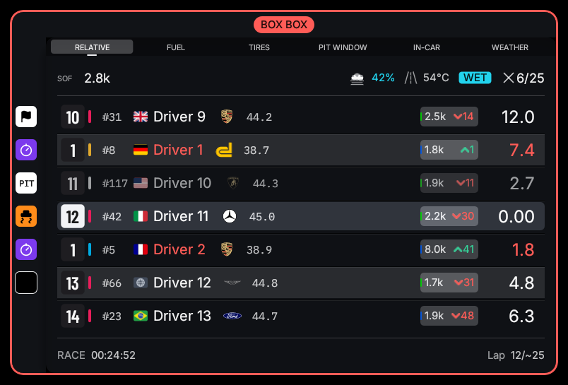
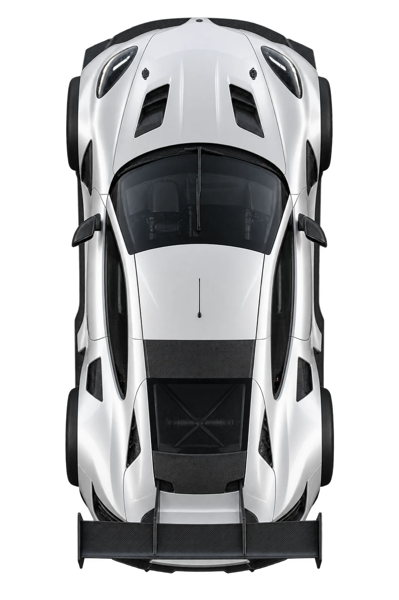
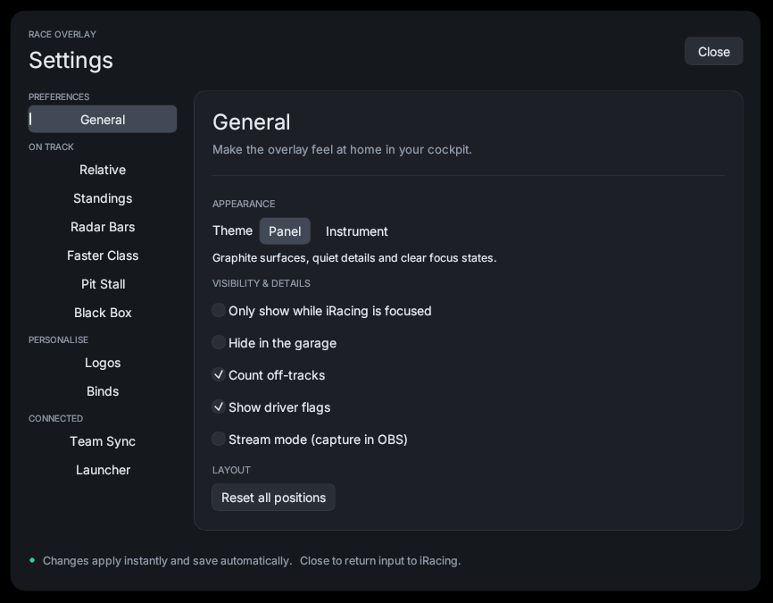

Race Overlay is an iRacing overlay for endurance and multi-class racing: five panels, a black box you drive from the wheel, and a team-sync layer that lets a crew chief watch — and adjust — the car they are not sitting in.
One payment. No subscription, no account.
Signed build for Windows 10 and 11.
Green
Six pages, walked with two buttons. Fuel, tyres, pressures, tearoff and fast repair, armed at speed without letting go of anything.
Scroll, and watch the fuel arm. Every value here is the sim’s own echo of what is loaded — not this overlay’s guess at it.
ADD
in the tankthis stop adds
Applies at the next stop
Nothing armed — the tank runs dry six laps early


In a team session every member’s sim publishes the same world, but only the seated driver’s sim publishes the car. Team sync shares the measurements, so a spectating crew chief sees real fuel, real tyre life, real strategy — and can set a fuel target, a tyre policy, or call BOX BOX.


Most overlays will happily project a number off three laps of noise. This one labels every estimate as an estimate, and leaves blank anything the sim has not published.
save to 2.58 L/lap to skip a stop
The pit window searches for the smallest per-lap saving that removes a whole stop from the rest of the race — and says so only when the saving is actually reachable. No measured burn, no known tank size, or a caution voiding the projection all leave it unsaid.


Colour and length carry the message, so the answer arrives before you have finished looking. These are the real ones — keep scrolling and they run.

Your car is framed between the brackets. Theirs is a block of the same length, so overlap is something you see rather than work out. Slate for a car with room, amber inside a car length, red once it overlaps — and the inboard rail lights.
Clear — nothing alongside
A quicker car is coming. It appears at a gap you set, turns red at a closer one, and goes when they have gone by. The Relative does show this — as one row among eight, read at 200 km/h. Being lifted out of it is the point.
5.6 s back — still yours
24m
APPROACHING
The bar empties as the marks come up, and a short range magnifies the last metre. An overshoot is a reverse, a crew that will not come out, or a penalty — in a 24-hour race, three times over.
24 m out — still braking

An overlay you have to think about is an overlay you turn off.
0.5%
CPU, while racing
50MB
Memory, resident
Not an idle reading — a full field, every panel up, the black box open. Both are figures you can watch in Task Manager yourself, which is the only kind worth printing.
There is no tier above this one. No seat count, no team plan, nothing held back so it can be sold to you at the end of a stint.
$14once — not per month
Checkout runs on Polar, the merchant of record — VAT and sales tax handled there.
Licence key and download by email.
14 days to change your mind.
You do not have to. Install Rust, clone the repository, run one build command, and you have the same program for nothing — the manual walks through it, and I am not going to pretend otherwise on my own sales page.
What $14 buys is not having to: a code-signed build Windows runs without a SmartScreen argument, packaged with the launcher, updated when I update it. If twenty minutes is worth more to you than fourteen dollars, take the free route with my blessing.
It reads the telemetry iRacing publishes through its own SDK, and the pit controls send the same commands the sim’s built-in black box sends. Nothing is injected into the game, no memory is read, and no input is sent to the car. It stands on the same ground as every mainstream iRacing overlay. I cannot agree to iRacing’s terms on your behalf, but there is nothing here that touches driving.
No. It draws an always-on-top window on your desktop, so a headset never sees it. On a screen — single, ultrawide or triple — it is fine, and each panel can be dragged onto whichever display you want it on.
Yes — each PC runs its own overlay, so each member needs one. Only one member hosts the relay, and hosting is a tick box in Settings rather than a server anyone has to run.
It sits at about 0.5% CPU and 50 MB of memory with a full field on track and every panel up. Open Task Manager alongside it and check — that is not a claim you should have to take my word for.
It is written in Rust, its background threads are marked for efficiency cores under EcoQoS, and the frame loop sleeps between draws instead of spinning. If you find a case where it costs you frames, tell me: that is a bug, not a trade-off.
Updates are included, and the overlay ships the diagnostic that finds these things fast:
--dump-vars prints exactly what the sim is publishing right now, so a value
that reads wrong gets checked against the source rather than argued about.
You have been. The Relative at the top of this page and the three panels above it are
the real designs, running in your browser, and every screenshot between them was rendered
by the overlay itself from a fixed demo snapshot — not mocked up in a design tool.
You can reproduce any of them with race-overlay.exe --demo, which does not
need iRacing running at all.
Get the build — $14
One payment. 14 days to change your mind.
Windows 10 and 11.